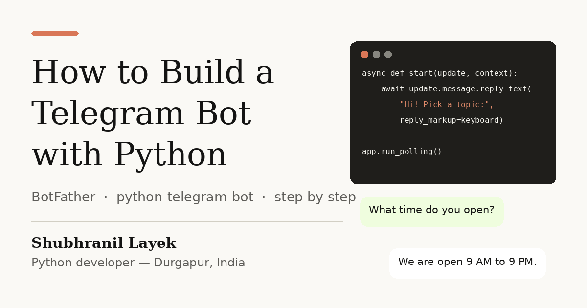
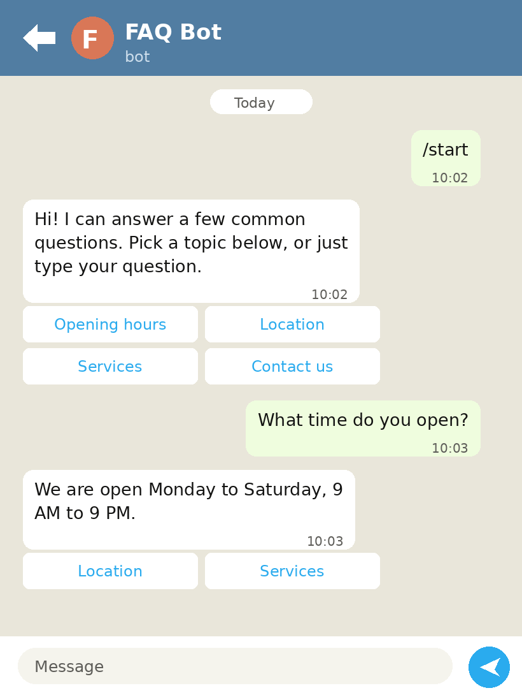

Tutorial
How to Build a Telegram Bot with Python: A Step-by-Step Guide
A Telegram bot is a program that talks to people inside Telegram. Shops, tutors and small teams use them to answer common questions, send alerts and collect orders, and they are simpler to build than most people expect. You do not need any coding experience to follow this telegram bot tutorial: it starts from zero — what a bot is, how to install Python, what a terminal is — and by the end you will have a small working chatbot of your own, in about an hour. If you'd rather not build it yourself, I can build the bot for you — for your business or a personal project — and there's a note about that at the end of this guide.
This guide builds one from an empty folder: a small FAQ bot that answers questions about opening hours, location, services and contact details. It responds to commands, shows tappable buttons and understands a few typed questions. The same steps, with more handlers and a database behind them, are how I built my Telegram News Bot, which you can also find in the projects section of this site.

Start Here: Telegram Bot Basics for Complete Beginners
If today is your first day with anything like this, read this part first. It takes about five minutes, and everything after it will make sense. If you already write Python, skip straight to Step 1.
What is a Telegram bot?
A Telegram bot is a program that lives inside Telegram and chats with people like a contact does. Someone opens a chat with it, sends a message or taps a button, and the program answers — instantly, at any hour, with nobody sitting there. Think of the assistant on a shop's number: you type "timings" and it replies with the opening hours. That is all a bot is. In this guide you will build a Telegram bot yourself, in Python, and Telegram will deliver the messages between you and it.
Install Python on your computer
Python is the language we will write the bot in — instructions for the computer, written in something close to plain English. It is free, and you need version 3.10 or newer.
- Windows: go to python.org/downloads, download Python and run the installer. On the very first screen, tick the box that says Add python.exe to PATH before you click Install. This one checkbox matters. Without it, Windows cannot find Python when you type its name, and every command in this guide will fail with a "not recognized" error. If you already installed Python without ticking it, run the installer again and choose Modify, then tick the box — or uninstall and reinstall. No harm done either way.
- Mac: download the macOS installer from the same python.org page and run it. If you use Homebrew,
brew install pythondoes the same job. On a Mac you will call itpython3, notpython. - Linux: Python 3 is usually already installed. If it is not, on Ubuntu or Debian run
sudo apt install python3 python3-venv.
Now check that it worked. Open a terminal (the next section shows how) and type python --version on Windows, or python3 --version on Mac and Linux, then press Enter. You should see something like Python 3.12.4. A version number means you are ready. An error almost always means the Windows PATH checkbox above was missed — on Windows you can also try py --version, because Windows installs a small py launcher that works even when python does not.
Open a terminal (command prompt)
A terminal — also called the command prompt or console — is a window where you give the computer instructions by typing instead of clicking. Every grey box of commands in this guide happens in a terminal. It looks bare, but you only need a handful of commands, and each one is explained where it appears.
- Windows: press the Start key, type
terminalorcmd, and open Windows Terminal or Command Prompt. PowerShell works too. - Mac: press Cmd+Space, type
Terminal, and press Enter. - Linux: press Ctrl+Alt+T, or find Terminal in your applications.
One habit to learn now: when a command runs a program — your bot, later — the terminal stays busy until you stop the program with Ctrl+C. That is normal. It is not a freeze.
Get a text editor for writing code
Code is written in a text editor, not in Word or Google Docs — those add hidden formatting that breaks programs. If you do not have one, install VS Code: it is free and works on Windows, Mac and Linux. Notepad on Windows or TextEdit on a Mac (set to plain text) are fine for this guide too. One warning that saves real pain: when you save a file named bot.py or .env, make sure the editor does not quietly add .txt to the end. If the save window has a "Save as type" or format option, choose "All files".
What You Need
- A Telegram account, to create the bot through BotFather
- Python 3.10 or newer — the section above shows how to install it
- A text editor — VS Code, Notepad or TextEdit, as covered above
- About an hour of free time
No server and no payment are needed to follow along. The bot runs on your own computer while you build it; keeping it online afterwards is covered in the last step.
Step 1: Create a Telegram Bot with BotFather
Every Telegram bot is registered through BotFather, Telegram's own official bot that creates and manages other bots. You talk to it like a person, and at the end it hands you a token. Here is how to create a Telegram bot with it, click by click:
- Open Telegram and search for BotFather. Pick the result with the blue verified tick — its username is exactly @BotFather. Similar names exist, and they are not the real one.
- Press Start (or send
/start). BotFather replies with a list of commands. - Send the command
/newbot. BotFather asks for a name first. - Send a display name — the friendly name people will see at the top of the chat, like FAQ Bot or Sharma Store Helper. Spaces and capital letters are fine, and you can change it later.
- Now BotFather asks for a username, and this one is different. The username is the bot's permanent address, like an Instagram handle, and it follows three rules: it must be unique (no other bot can already have it), it can only contain letters, numbers and underscores, and it must end in the word
bot— for examplemy_sample_faq_botorSharmaStoreBot. If your choice is taken, BotFather says so and you simply try another. Unlike the display name, the username can never be changed later, so pick one you are happy with. - BotFather replies with a congratulations message and your token: a long string that looks like
123456789:AAE.... That token is the most important thing in this guide.
So what is the token? It is your bot's password. Your program shows this token to Telegram to prove "I own this bot — let me read its messages and reply to them." The door your program knocks on is called the Bot API. An API is simply a fixed set of ways one program can ask another program for things, and the token is the key to that door.
Because the token is a key, treat it like one. Anyone who has it controls your bot completely — they can read its messages and send anything in its name. So: never paste it into your code, never upload it to GitHub, never send it in a chat or leave it visible in a screenshot. In Step 2 you will store it in a separate file called .env that stays on your computer. If the token ever does leak, open BotFather, send /revoke, and it will cancel the old token and give you a new one; you then update your .env file and restart the bot. While you are in BotFather, /setdescription and /setuserpic let you add a description and a profile photo so the bot looks finished.
Step 2: Set Up the Python Project
Now the computer side. Open your terminal and create a folder where the bot will live. mkdir means "make directory" — it creates a folder — and cd moves you inside it:
mkdir faq-bot
cd faq-botEverything for this bot goes in this one folder. Next, a virtual environment. A virtual environment is a private box inside the folder where this project's Python packages live, so they never mix with other projects. Create the box and switch it on:
python3 -m venv .venv
source .venv/bin/activateOn Windows, create it with py -m venv .venv and switch it on with .venv\Scripts\activate. When the box is on, your terminal prompt starts with (.venv). Remember that detail — a large share of beginner errors come from this box being switched off. Every time you open a fresh terminal to work on the bot, run the activate command again before anything else.
Now install the library. pip is Python's package installer — think of it as an app store for ready-made code that other people have written. This one command downloads python-telegram-bot, the library that does the hard work of talking to Telegram for us, plus python-dotenv, a small helper that will read your token file:
pip install python-telegram-bot python-dotenvNext, the token. In your text editor, create a new file inside the faq-bot folder and save it with the name .env — exactly that, starting with a dot, nothing before or after it (choose "All files" in the save window so it does not become .env.txt). Put this single line in the file, with your real token after the equals sign:
TELEGRAM_BOT_TOKEN=123456789:AAE...This .env file is where the token lives — outside your code, so you can show or share the code without ever exposing the bot. Never upload the .env file anywhere. If you later put this project on GitHub, first create a file called .gitignore with a line saying .env in it; that tells Git to leave the file out of every upload.
Last, create the code file: an empty file named bot.py in the same folder. Every piece of code in the rest of this guide goes into that one file.
Step 3: The First Bot — /start and /help
The library works with handlers. A handler is a rule that says "when this kind of message arrives, run this function." You write one function per job, register it as a handler, and the library calls it at the right moment. This first version of the code gives your bot two commands: /start greets the user, and /help lists what the bot can do:
import os
from dotenv import load_dotenv
from telegram import Update
from telegram.ext import Application, CommandHandler, ContextTypes
load_dotenv()
async def start(update: Update, context: ContextTypes.DEFAULT_TYPE) -> None:
await update.message.reply_text(
"Hi! I am your new bot. Send /help to see what I can do."
)
async def help_command(update: Update, context: ContextTypes.DEFAULT_TYPE) -> None:
await update.message.reply_text("/start - say hello\n/help - show this message")
def main() -> None:
token = os.environ["TELEGRAM_BOT_TOKEN"]
app = Application.builder().token(token).build()
app.add_handler(CommandHandler("start", start))
app.add_handler(CommandHandler("help", help_command))
app.run_polling()
if __name__ == "__main__":
main()A few things worth noticing. The async and await words appear everywhere in this library; for now, just copy the pattern exactly — they let the bot juggle many chats at once, and you do not need to understand them deeply to use them. And load_dotenv() near the top reads your .env file, so the code can pick the token up without the token itself ever appearing in the code.
Run it: type python3 bot.py in the terminal (on Windows, python bot.py) and press Enter. Open your bot in Telegram and press Start. It should greet you, and /help should list the commands. The last line, app.run_polling(), is what keeps the bot alive: polling means the program asks Telegram "any new messages for me?" every few seconds and answers the ones it finds. Leave the terminal open while you test, and press Ctrl+C in the terminal when you want the bot to go offline.
One thing worth knowing early: a bot cannot message someone first. A user has to open the chat and press Start (or send a message) before the bot can reply. That is a Telegram rule, not a limitation of your code.
Step 4: Add Inline Keyboard Buttons
Typing commands is fine for developers, but most people would rather tap. An inline keyboard attaches buttons under a message. Each button carries a short callback_data string — a label that Telegram sends back to your bot when the button is tapped, so your code knows which topic was picked. The code below has two parts: a function that builds the keyboard, and a function that answers a tap:
from telegram import InlineKeyboardButton, InlineKeyboardMarkup
def topic_keyboard() -> InlineKeyboardMarkup:
keyboard = [
[
InlineKeyboardButton("Opening hours", callback_data="hours"),
InlineKeyboardButton("Location", callback_data="location"),
],
[
InlineKeyboardButton("Services", callback_data="services"),
InlineKeyboardButton("Contact us", callback_data="contact"),
],
]
return InlineKeyboardMarkup(keyboard)
async def start(update: Update, context: ContextTypes.DEFAULT_TYPE) -> None:
await update.message.reply_text(
"Hi! I can answer a few common questions. Pick a topic:",
reply_markup=topic_keyboard(),
)
async def button_tap(update: Update, context: ContextTypes.DEFAULT_TYPE) -> None:
query = update.callback_query
await query.answer()
answers = {
"hours": "We are open Monday to Saturday, 9 AM to 9 PM.",
"location": "You can find us on MG Road, Durgapur. Look us up on Google Maps for directions.",
"services": "We offer dine-in, takeaway and home delivery within the neighbourhood.",
"contact": "You can call us on 98765 43210 or email hello@example.com.",
}
await query.edit_message_text(
answers.get(query.data, "Sorry, I do not have an answer for that yet."),
reply_markup=topic_keyboard(),
)
# inside main(), next to the other add_handler lines:
app.add_handler(CallbackQueryHandler(button_tap))In plain words: when a button is tapped, the bot looks up the answer for that button's label and swaps the menu message for the answer, keeping the buttons attached so the user can pick another topic. Two details matter here. query.answer() tells Telegram the tap was received, which stops the loading spinner on the button. And edit_message_text replaces the menu message with the answer, then attaches the same keyboard again so the user can pick another topic without typing anything.
Step 5: Let the Bot Understand Typed Questions
Buttons cover the questions you expect. For everything else, a MessageHandler can read plain text messages and look for keywords. This function takes the message the user typed, checks it against a list of words, and replies with the matching answer:
async def text_message(update: Update, context: ContextTypes.DEFAULT_TYPE) -> None:
text = update.message.text.lower()
if "hour" in text or "open" in text:
answer = ANSWERS["hours"]
elif "where" in text or "address" in text:
answer = ANSWERS["location"]
elif "deliver" in text or "service" in text:
answer = ANSWERS["services"]
else:
answer = "I am not sure about that one. Try one of the topics below."
await update.message.reply_text(answer, reply_markup=topic_keyboard())
# inside main():
app.add_handler(MessageHandler(filters.TEXT & ~filters.COMMAND, text_message))Keyword matching is simple, and for a fixed set of questions it works well: if the word "open" or "hour" appears in the message, the bot answers with the opening hours. It is not artificial intelligence — the bot only recognises the words you listed — but for an FAQ bot that honesty is a feature. The answers are always the ones you wrote.
To keep the flow tidy, the complete version below wraps these handlers in a ConversationHandler. A ConversationHandler is a handler that remembers which step of the chat each user is on: it remembers that a user who pressed /start is now in the "choosing a topic" state, routes their button taps and typed questions to the right functions, and lets /cancel end the conversation politely.

The Complete Bot Code
Here is the whole bot in one file — the commands, buttons, keyword answers and conversation flow combined. Do not be put off by the length: it is only the pieces above put together, with the answers moved into one list at the top. Replace the sample answers, phone number and address in ANSWERS with your own details; that dictionary is the only part you have to personalise:
import logging
import os
from dotenv import load_dotenv
from telegram import InlineKeyboardButton, InlineKeyboardMarkup, Update
from telegram.ext import (
Application,
CallbackQueryHandler,
CommandHandler,
ContextTypes,
ConversationHandler,
MessageHandler,
filters,
)
load_dotenv()
logging.basicConfig(
format="%(asctime)s - %(name)s - %(levelname)s - %(message)s",
level=logging.INFO,
)
CHOOSING = 0
ANSWERS = {
"hours": "We are open Monday to Saturday, 9 AM to 9 PM.",
"location": "You can find us on MG Road, Durgapur. Look us up on Google Maps for directions.",
"services": "We offer dine-in, takeaway and home delivery within the neighbourhood.",
"contact": "You can call us on 98765 43210 or email hello@example.com.",
}
KEYWORDS = {
"hour": "hours",
"open": "hours",
"timing": "hours",
"where": "location",
"location": "location",
"address": "location",
"service": "services",
"deliver": "services",
"contact": "contact",
"phone": "contact",
"call": "contact",
}
def topic_keyboard() -> InlineKeyboardMarkup:
keyboard = [
[
InlineKeyboardButton("Opening hours", callback_data="hours"),
InlineKeyboardButton("Location", callback_data="location"),
],
[
InlineKeyboardButton("Services", callback_data="services"),
InlineKeyboardButton("Contact us", callback_data="contact"),
],
]
return InlineKeyboardMarkup(keyboard)
async def start(update: Update, context: ContextTypes.DEFAULT_TYPE) -> int:
await update.message.reply_text(
"Hi! I can answer a few common questions. "
"Pick a topic below, or just type your question.",
reply_markup=topic_keyboard(),
)
return CHOOSING
async def help_command(update: Update, context: ContextTypes.DEFAULT_TYPE) -> None:
await update.message.reply_text(
"/start - open the question menu\n"
"/help - show this message\n"
"/cancel - end the conversation"
)
async def button_tap(update: Update, context: ContextTypes.DEFAULT_TYPE) -> int:
query = update.callback_query
await query.answer()
answer = ANSWERS.get(query.data, "Sorry, I do not have an answer for that yet.")
await query.edit_message_text(answer, reply_markup=topic_keyboard())
return CHOOSING
async def text_message(update: Update, context: ContextTypes.DEFAULT_TYPE) -> int:
text = update.message.text.lower()
for word, topic in KEYWORDS.items():
if word in text:
await update.message.reply_text(
ANSWERS[topic], reply_markup=topic_keyboard()
)
return CHOOSING
await update.message.reply_text(
"I am not sure about that one. Try one of these topics:",
reply_markup=topic_keyboard(),
)
return CHOOSING
async def cancel(update: Update, context: ContextTypes.DEFAULT_TYPE) -> int:
await update.message.reply_text(
"No problem. Send /start whenever you want to chat again."
)
return ConversationHandler.END
def main() -> None:
token = os.environ.get("TELEGRAM_BOT_TOKEN")
if not token:
raise SystemExit(
"TELEGRAM_BOT_TOKEN is not set. Put your BotFather token in the .env file first."
)
app = Application.builder().token(token).build()
conversation = ConversationHandler(
entry_points=[CommandHandler("start", start)],
states={
CHOOSING: [
CallbackQueryHandler(button_tap),
MessageHandler(filters.TEXT & ~filters.COMMAND, text_message),
]
},
fallbacks=[CommandHandler("cancel", cancel)],
)
app.add_handler(conversation)
app.add_handler(CommandHandler("help", help_command))
app.run_polling()
if __name__ == "__main__":
main()Save it as bot.py, replacing the earlier version, make sure the .env file sits in the same folder, and run python3 bot.py. You now have a working chatbot: it greets people, answers from your list of questions by button or by keyword, and keeps the conversation going until the user cancels.
Step 6: Keep the Bot Running
While the script runs on your computer, the bot is online. Close the laptop and it stops. There are two ways Telegram can deliver messages to a bot, and it helps to know the difference before you pick a home for it. With polling, your program keeps asking Telegram for new messages — that is what you have been using so far. With a webhook, Telegram pushes each new message to your server's address the moment it arrives:
| Polling | Webhook | |
|---|---|---|
| How it works | Your script asks Telegram for new messages every few seconds | Telegram sends each new message to your server's URL |
| Setup | Nothing to configure; just run the script | Needs a public HTTPS address and a small web server |
| Good for | Learning, small bots, a home machine or a cheap VPS | Busy bots and production setups |
| Watch out for | The bot is offline whenever the script is stopped | More moving parts to secure and look after |
For a small bot, polling on a low-cost VPS is enough. On a Linux server, a systemd service keeps the bot running and restarts it if it crashes or the server reboots. This part is only for a Linux server — if your bot still runs on your own computer, skip it for now and come back when you move the bot. Save this as /etc/systemd/system/faq-bot.service:
[Unit]
Description=Telegram FAQ bot
After=network.target
[Service]
WorkingDirectory=/home/user/faq-bot
Environment=TELEGRAM_BOT_TOKEN=your-token-here
ExecStart=/home/user/faq-bot/.venv/bin/python /home/user/faq-bot/bot.py
Restart=always
[Install]
WantedBy=multi-user.targetThen start it with sudo systemctl enable --now faq-bot. Whichever way you run it, run only one copy at a time: two scripts polling with the same token make Telegram reject the second one with a conflict error.
Stuck? Beginner Mistakes and Fixes
Almost every beginner hits one of these. Find the problem you are seeing — the fix is usually one line.
- "Python is not recognized" (Windows). The terminal says
'python' is not recognized as an internal or external command. This is the PATH checkbox from the install section: Windows was never told where Python lives. Fix it by running the Python installer again, choosing Modify, and ticking "Add python.exe to PATH" — or simply usepyinstead ofpythonin every command, because thepylauncher works either way. - ModuleNotFoundError: No module named 'telegram'. Python cannot find the library, which almost always means the virtual environment is off, or the library was installed while it was off. Fix: run the activate command for your system, check that your prompt starts with
(.venv), then runpip install python-telegram-bot python-dotenvagain and start the bot again. - Invalid token, or an "Unauthorized" error. The token in your
.envfile does not match the one BotFather issued. Fix: open BotFather, copy the token again carefully — the whole string, no spaces at the start or end — and check that your.envline is exactlyTELEGRAM_BOT_TOKEN=followed by the token, all on one line. If you ever revoked the token, the old one is dead; only the newest one works. - The bot runs but never replies. Work through this short list: is the script still running in the terminal (you should see it waiting, not a finished prompt)? Are you messaging the right bot — check the username against the one you chose in Step 1? Did you press Start in the chat? And does the token in
.envbelong to this bot, not another one? - "Conflict: terminated by other getUpdates request". Two copies of the bot are polling with the same token, and Telegram allows only one. Fix: close every terminal that is running
bot.py(and stop the server service too, if you set one up), wait a few seconds, then start exactly one copy. - Pasting the token into the code. Sooner or later that file reaches GitHub, and bots with leaked tokens get taken over. Keep the token in the
.envfile, and revoke it in BotFather if it ever gets out. - Waiting for the bot to speak first. It cannot. A user always has to open the chat and press Start before the bot can send anything.
- Worrying about "Message is not modified". If a user taps the same topic button twice, Telegram refuses to edit the message into identical text and logs this error. It is harmless.
- Expecting keyword matching to be clever. The bot only finds the exact words in your list. Cover the common phrasings ("open", "timing", "hours") and give a helpful fallback answer for the rest.
Frequently Asked Questions
Is it free to build a Telegram bot?
Yes. Creating a bot with BotFather and using the Telegram Bot API costs nothing. You only pay if you choose to rent a server to keep the bot online around the clock.
Do I need a server?
Not for learning or testing — polling works on your own computer for as long as the script runs. If the bot needs to answer at any hour, move it to a small VPS or any machine that stays on.
Should I use polling or a webhook?
Polling, while the bot is small or you are still learning. A webhook earns its extra setup when the bot gets busy, or when you already run a web server and want messages pushed to you instantly.
Can a Telegram bot message people first?
No. A user has to open the chat and press Start, or send the bot a message, before it can reply to them. Bots also cannot message people who have never interacted with them.
Is python-telegram-bot the only Python library for this?
No. aiogram is another popular choice, and you can also call the Telegram Bot API directly with plain HTTP requests. This guide uses python-telegram-bot because its handler model is easy to follow when you are starting out.
You Did It: What You Have Now
If you followed along, look at what is now sitting on your computer — not bad for a first day:
- ✓ A Telegram bot of your own, created with BotFather, with a username anyone can find
- ✓ Python installed properly, and a project folder with its own virtual environment
- ✓ Your bot's token stored safely in a
.envfile, out of the code - ✓ A working
bot.pythat greets people with/start, helps with/helpand ends politely with/cancel - ✓ Tappable topic buttons, plus answers to typed questions, using your own words and answers
- ✓ A bot that stays online while the script runs — and a clear next step (a small VPS with the service above) for when you want it on all day
From here, every bigger bot is the same pattern repeated: a new question is a new answer in the list, and a new action is a new handler. That is genuinely how the Telegram News Bot mentioned at the start is put together.
Need a Telegram Bot Built for You?
If you want a Telegram bot built for you, I build bots like this one — FAQ and support chatbots, news and alert bots, and price-tracking bots — for small businesses and personal projects. A bot for your business can answer customer enquiries, take orders, handle routine support questions and send alerts when something needs a human. You can see my work on GitHub, including the Telegram News Bot mentioned at the start, or reach me at subhralayek7@gmail.com.
I'm Shubhranil Layek, a Python developer based in Durgapur, West Bengal, and I'm available for freelance projects. If you have a bot in mind, write to me with what it should do — I'll reply with how I would build it.
For more guides and projects, visit Shubhranil Layek's developer website or browse the blog.